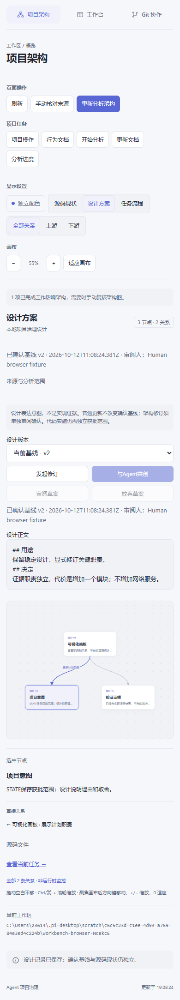
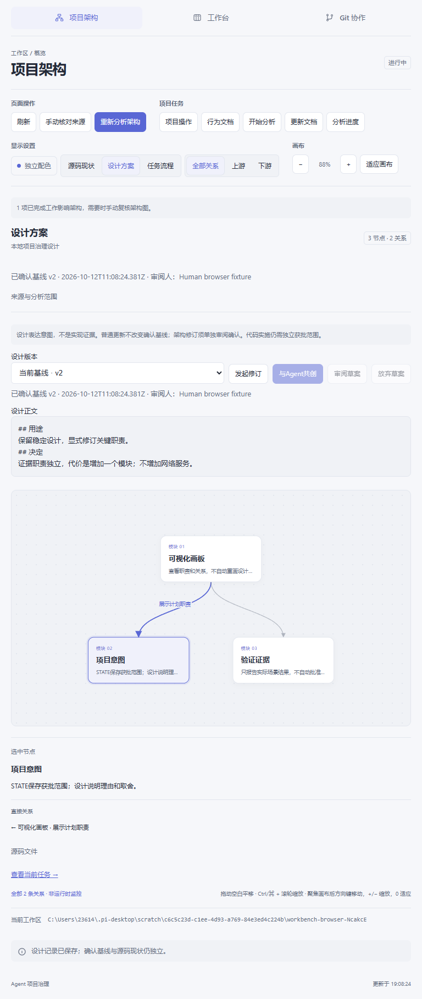
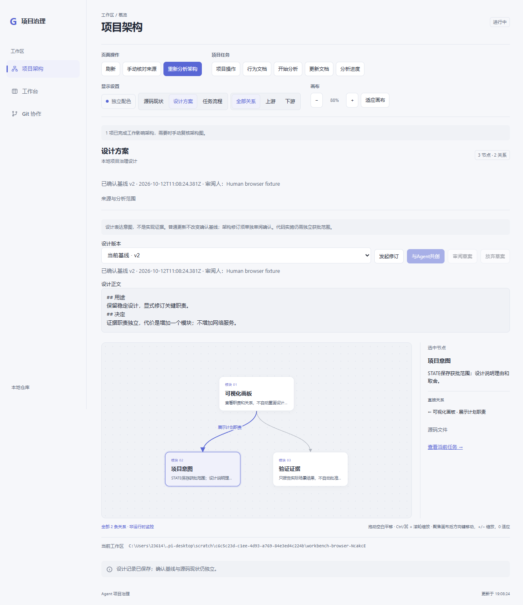
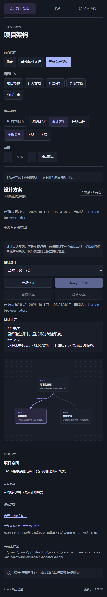
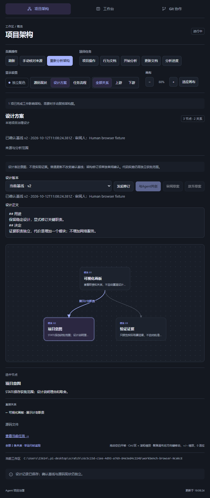
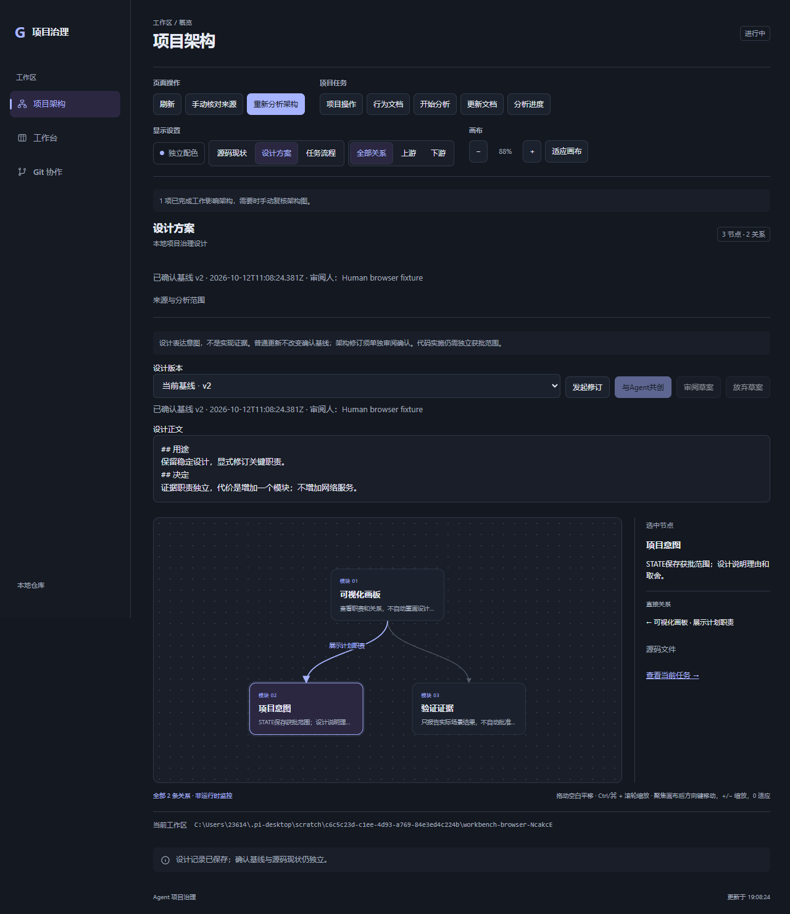
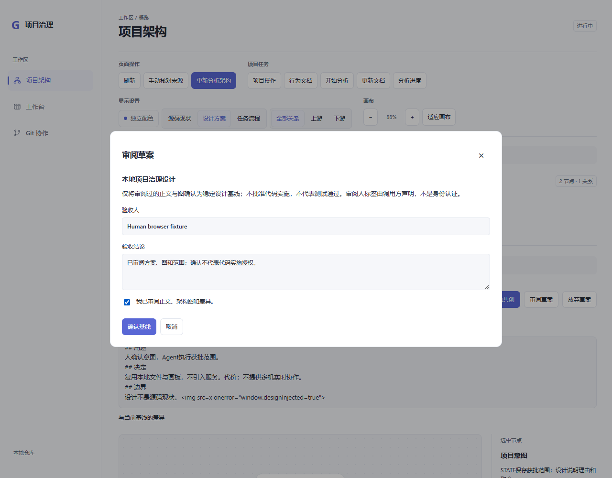
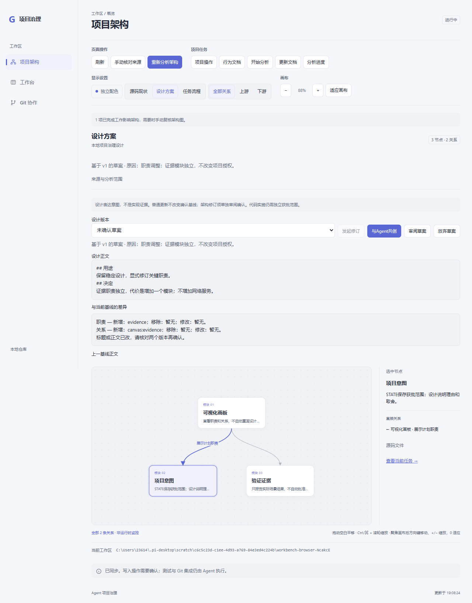

0.7.3：Architecture Copilot按需共创可读设计草案，现有画板展示；人工面板确认具体版本，普通更新不重画，修订保留旧基线。设计意图与源码事实、STATE授权和测试证据分开。
实际检查：类型/构建、120项单元测试、86张截图的隔离Chromium浏览器回归通过。新场景验证首次确认、显式修订/历史和工作区隔离；正文只作纯文本，测试HTML不能执行。画板测试使用真实临时项目后端；宿主事件和模型会话为模拟，不代表实际安装、收费Agent对话质量或真实人工审阅。
新增agent.prompt.inject已获用户明确批准。Skill固定上游462c8c5、保留MIT许可，约5KB入口按需加载参考资料，不要求draw.io/CLI。未自动安装或提交市场，总体验收仍开放。







